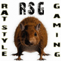
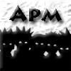

Это реконструированный сайт topw3.narod.ru | Харьков 2005-2007



--vs-- RSG)Xorek—[2:0]—fsport.Chaosfsport.Alan
RSG)Xorek—[2:0]—fsport.Chaosfsport.Alan Fist)-[2:1]-fres AT (Raze +Gansay )
Fist)-[2:1]-fres AT (Raze +Gansay )
apm.BardRSG)Fist -> amp.Ciris NST
NST